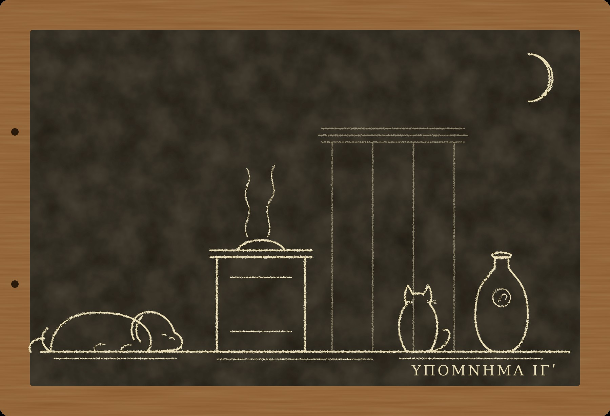

Гипомнема XIII Всегда

I
Третьего января двести пятидесятого года, как каждый год, на Капитолии приносили жертву Юпитеру за благополучие Августа и государства, и в этот раз, когда дым ещё не рассеялся, с храмовых ступеней прочли эдикт.
Я стоял внизу, в толпе стражей слов, и слушал. Читал глашатай с хорошим голосом, из тех, кого учат, как и нас, говорить так, чтобы было слышно в базилике. Каждый житель империи, мужчина и женщина, свободный и отпущенник, должен в назначенный срок явиться к комиссии своего квартала, бросить ладан на огонь перед изображением Августа и богов, совершить возлияние, отведать жертвенного мяса и поклясться. Комиссия отпустит его с миром. Тот, кто откажется, будет взят под стражу, пока не одумается. Иудеев, по старому праву, эдикт не касается.
Потом глашатай прочёл формулу клятвы, и я её запомнил с первого раза, как запоминал всю жизнь.
«Я всегда приносил жертвы богам. Ныне при вас я принёс жертву, совершил возлияние и отведал жертвенного. Клянусь в этом».
Никанор стоял рядом. Я видел, как он повторил формулу губами, без голоса, как нас учили.
— Всегда, — сказал он, когда глашатай умолк.
— Всегда, — согласился я.
Мы оба поняли одно и то же. Клясться можно только в прошлом и в настоящем. Ныне при вас принёс, это настоящее, и это правда для всякого, кто бросил ладан. А всегда, это прошлое, и это неправда для всякого, кто ещё в декабре ходил в дом на Целии, где собираются христиане. Формула не требует от них отречься. Она требует от них поклясться, что им не от чего отрекаться.
Никто не сказал вслух, кто её составил. Этого и не нужно было говорить. На ступенях храма, в свите Августа, среди канцелярии, стоял человек с обыкновенным лицом и держал руки сложенными перед собой. Ни одно слово в формуле не повторялось.
Через два дня в коллегии раздали назначения. Меня и Никанора поставили хранителями при комиссии у храма Сатурна, на западном краю Форума, под Капитолием. Председателем комиссии был сенатор Квинт Ливий Флор, человек лет пятидесяти, высокий, с голосом, который он, видимо, тоже когда-то ставил, только хуже нас. Флор принял назначение как награду. Говорили, что он надеется на консульство.
II
Очередь у храма Сатурна стояла от первого часа до темноты, и Рим шёл в ней весь.
Шли торговцы с Аргилета и с Велабра, в лучших туниках, и клялись быстро, как платят пошлину. Шли старухи, которые приносили жертвы всю жизнь и теперь обижались, что их об этом спрашивают. Шли отпущенники, гордые тем, что их тоже спрашивают. Шли рабы, и комиссия отсылала их назад к хозяевам, потому что рабы не клянутся, а за раба клянётся хозяин. Перед храмом стоял жертвенник, а у жертвенника жрец. Рядом на треножнике стояла жаровня с углями, и каждый бросал на неё щепоть ладана из корзины. Потом жрец давал ему из чаши немного вина, чтобы плеснуть на угли, и кусок мяса с жертвенника. Человек съедал мясо, поворачивался к нам и говорил формулу. Мы с Никанором стояли по сторонам, сложив руки, и слушали.
Я слушал каждого так, как меня учили двадцать лет: не смысл, а голос. У того, кто говорит правду, голос на «всегда» не меняется. Он его не замечает, потому что это слово для него ничего не значит. У того, кто говорит неправду, голос на «всегда» садится или, наоборот, поднимается.
За первую неделю у меня сел голос в ушах раз двадцать.
Христиан было меньше, чем говорили в Субуре, и больше, чем хотел бы Флор. Одни подходили к жертвеннику, смотрели на угли и говорили спокойно, что не будут. Таких уводили люди префекта города. Другие подходили, бросали ладан, плескали вино, давились мясом и говорили формулу. На «всегда» у них садился голос. Флор этого не слышал. Флор слышал только последнее «клянусь в этом» и кивал.
Евмен стоял у колонны храма. Он приходил каждый день, к третьему часу, и уходил к девятому. В руках у него была табличка, та самая, в деревянной рамке, которую он раскрыл у меня осенью на колене. Он писал не всех. Я заметил это на второй день. Торговцы с Аргилета его не занимали. Старухи тоже. Он писал тех, у кого садился голос.
Двадцатого января в Рим пришла весть, что в тюрьме умер епископ Фабиан. Он отказался приносить жертву ещё в первые дни, и его держали, пока он не умер. Наутро к комиссии у храма Кастора, в двухстах шагах от нашей, привели двух пресвитеров, Моисея и Максима, и те тоже отказались. Их увели.
Секста Фурия привели к нам на шестой день. Он стоял перед жертвенником босой, худой, в том самом плаще, который отдал ему Новациан у ворот лагеря, и смотрел на угли.
— Нет, — сказал он, когда жрец протянул ему ладан. — Я уже говорил вам осенью. Я не клянусь.
Флор посмотрел на меня, как смотрят на собаку, которая знает дорогу.
— Хранитель, этот человек клялся когда-нибудь при тебе?
— Он не клялся ни при ком, — сказал я. — Это я могу подтвердить.
Фурия увели. Он не оглянулся.
III
Никанор принёс мне весть о Тимоне в конце января, вечером, когда мы повторяли хранимое за день. Хранимого было много: за день комиссия принимала до трёх сотен клятв, и мы, разделив их пополам, повторяли каждую.
— У храма Кастора, — сказал Никанор, когда мы кончили. — Старый Тимон. Он подтверждает клятвы, которых не было.
— Ты уверен?
— Ко мне пришла женщина. Её мужа вызвали к комиссии. Он христианин. Он не пошёл. Через три дня ему сказали, что он внесён в список поклявшихся, потому что страж Тимон помнит его клятву. Женщина не знала, благодарить или проклинать. Она пришла спросить меня, может ли страж помнить то, чего не было.
— Что ты ей ответил?
— Что может, — сказал Никанор и посмотрел на меня. — Я её не обманул.
Тимону было за семьдесят. Он жил на Велабре, недалеко от того места, где когда-то жил Гермоген, и, может быть, поэтому я пошёл к нему на следующий же день. Он принял меня в маленькой комнате над мастерской сапожника, в которой пахло кожей и старым человеком.
Я не стал притворяться. Я сказал, что знаю, что он делает.
— Да, — сказал Тимон. — Я так и думал, что кто-нибудь узнает. Лучше ты, чем Флор.
— Сколько?
— Шесть. Седьмой вчера.
— За деньги?
Он покачал головой.
— Сначала за деньги. Первый принёс мне золотой, и я его взял, потому что был дурак и думал, что за золотой не жалко. Потом остальные. Последние двое ничего не принесли, у них ничего и не было.
— Зачем?
Тимон долго молчал. Руки у него лежали на коленях, как у всех нас.
— У них нет никого, — сказал он наконец. — У них есть бог, которым они не клянутся. Им не к кому пойти, когда приходит комиссия. К жрецу нельзя, к своим нельзя, свои скажут, что они уже отступили, раз пошли к стражу. Пусть хоть я буду у них.
— Ты знаешь, что ты клянёшься во лжи.
— Знаю, — сказал Тимон. — Я считаю ночи. Шестая клятва была одиннадцать ночей назад. Седьмая вчера. До луны пять ночей.
Я посмотрел на него. Ему было за семьдесят, и он был, насколько я мог судить, вполне здоров. Он сидел прямо и говорил ровно. Он верил, что боги заберут его до луны, и всё равно сделал это семь раз.
— Пять ночей, — повторил я.
— Я пережил уже шесть лун, — сказал Тимон. — Не знаю почему. Может быть, боги тоже смотрят на очередь у храма и им некогда. Может быть, я им не интересен. Это хуже всего, хранитель. Я жду, а они не приходят. Я не знаю, что я им сделал, что они меня не замечают.
Я не сказал ему того, что знаю. Это была не моя тайна, чтобы отдавать её человеку, который всю жизнь верил в другое. И, кроме того, я уже не был уверен, что знаю.
IV
Луций Кальвисий Онесим торговал пряностями на Священной дороге, у Арки Тита, в лавке, где пахло перцем так, что у прохожих слезились глаза. Ему было около пятидесяти, он был грек из Смирны, получил гражданство при Каракалле вместе со всеми, и до декабря ходил в дом на Целии. В середине января он пришёл к нашей комиссии сам, без вызова, бросил ладан, плеснул вино, съел мясо и сказал формулу. На «всегда» голос у него сел так, что я услышал это и без выучки.
Евмен у колонны записал его.
За пять ночей до луны Онесима нашли мёртвым у него дома, над лавкой. Он лежал на постели, будто спал, только лицо было тёмное. Лекарь ничего не нашёл. Раб, который спал внизу, ничего не слышал.
Весть об этом обошла Форум к полудню, и к вечеру Рим знал, что боги карают и христиан тоже.
Флор был счастлив. Он не говорил этого вслух, но я видел, как он стоял у жертвенника, как держал голову, как здоровался с каждым, кто подходил к ладану. Очередь за два дня выросла вдвое. Христиане шли толпой, многие с семьями. Они клялись быстро, не глядя, будто ныряли в холодную воду. Из тюрьмы пришла весть, что трое из взятых в январе согласились принести жертву. Одного из них, говорили, заставил согласиться не страх тюрьмы, а смерть Онесима: если римские боги достают и христиан, рассудил он, значит, они и есть настоящие.
Я помню, что стоял вечером у храма, когда комиссия разошлась, смотрел на остывшую жаровню и думал, что за двенадцать лет я ни разу не видел кары, которая была бы карой. Каждая оказывалась убийством. Но каждая оказывалась убийством, только когда я находил убийцу. Если я не найду его на этот раз, Онесим будет первой карой над христианином, и это изменит всё.
V
Мать Фурия звали Анфусой. Мне сказал о ней Новациан. Он пришёл ко мне в начале февраля поздно вечером и, против обыкновения, не сел, а стоял у двери, будто боялся, что, если сядет, его кто-нибудь увидит.
Анфуса была вдовой, ей было под шестьдесят. Она жила на Целии, в инсуле на третьем этаже, и уже месяц не вставала: у неё отказывали ноги. Комиссия Целия вызывала её дважды. Дважды соседи говорили, что она больна. Третий вызов был назначен через шесть дней. Если она не придёт, за ней пришлют людей префекта.
— Она не придёт, — сказал Новациан. — Её принесут. Она откажется. Её отнесут в тюрьму, и она умрёт там за неделю. Она старая, у неё нет ног, и Фурий в соседней камере.
— Чего вы от меня хотите?
— Ничего, — сказал Новациан. — Я не могу от вас ничего хотеть. Если бы я хотел, я хотел бы, чтобы она осталась твёрдой. Если она не останется, я не приму её обратно, когда это кончится. Я так считаю и не изменю этого. Я пришёл сказать вам, потому что вы спросили меня осенью, осуждаю ли я Фурия. Я сказал, что стараюсь не судить живых. Анфуса пока живая.
Он ушёл. Ферокс проводил его до лестницы и вернулся, ворча.
Я сидел до полуночи. Никанор ушёл давно. Пами спал на балке. Потом я пошёл к Досифею.
Досифей не спал. Ему было за восемьдесят, он почти ничего не видел и почти не выходил из комнаты над собранием, но слышал всё, что делалось в переулке за Аргилетом, и знал, кто стучит, по тому, как стучат. Он сказал, что у него в доме двое христианских детей, мальчик и девочка, чьих родителей взяли в январе, и что больше он не может, потому что за домом следят.
— Эдикт нас не касается, — сказал он. — Это хорошо и плохо. Хорошо, потому что нас не спрашивают. Плохо, потому что все теперь знают, где искать тех, кого не спрашивают. Пришли ко мне трое, назвались иудеями, хотели, чтобы я подтвердил. Я им сказал: я подтвердить могу только то, что знаю, а знаю я про вас то, что вы не иудеи. Они ушли. Я до сих пор не знаю, правильно ли сделал.
Я рассказал ему про Анфусу и про то, что собираюсь сделать.
Досифей долго молчал.
— У нас есть закон, — сказал он наконец. — Обет, данный по ошибке, снимается. С того, кто знал, взыскивают. Ты будешь знать.
— Буду.
— Тогда с тебя и взыщут, — сказал Досифей. — Если есть кому взыскивать. Ты двадцать с лишним лет ждёшь, что тебе скажут, есть ли. Может быть, это и есть способ узнать.
VI
На следующий день, в шестом часу, когда очередь у храма Сатурна стала реже, а Флор ушёл обедать, я подошёл к жрецу и сказал, что хочу подтвердить клятву, которую слышал.
Жрец удивился, но не очень. Стражи иногда подтверждали клятвы, данные при них в другой комиссии, когда кого-то по ошибке вносили не в тот список. Флор вернулся к концу обеда, выслушал жреца и позвал меня к жертвеннику.
— Кого ты подтверждаешь, хранитель?
— Анфусу, вдову, с Целия, что у Большого рынка. Она клялась при мне, когда я шёл сюда, на четвёртый день до февральских календ. У неё отнялись ноги, её принесли к комиссии Целия на носилках, и я стоял там, проходя, и слышал. Комиссия Целия, видимо, не внесла её, потому что её принесли поздно, когда там уже расходились.
Всё это было неправдой. Я не стоял у комиссии Целия. Анфусу не приносили. Она лежала у себя наверху и ни о чём не знала.
Никанор стоял рядом, сложив руки, и молчал. Я не смотрел на него.
— Клянись, — сказал Флор.
Я положил руку на камень жертвенника, тёплый от углей, и сказал:
— Анфуса, вдова, с Целия, на четвёртый день до февральских календ при мне принесла жертву, совершила возлияние, отведала жертвенного и сказала формулу эдикта. Я помню это. Клянусь в этом.
Голос у меня не сел. Я знаю, потому что слушал его так же, как слушал чужие, и ничего не услышал. Двадцать лет меня учили говорить так, чтобы голос не менялся, и меня научили хорошо.
Флор кивнул и велел внести Анфусу в список. Писец записал. Всё это заняло меньше времени, чем занимает у старухи съесть кусок жертвенного мяса.
Вечером Никанор пришёл ко мне повторять хранимое. Мы повторили всё, что было за день, до последней клятвы. Последней была моя. Никанор произнёс её первым, слово в слово, моим голосом, как произносит всё.
— Анфуса, вдова, с Целия...
Он договорил до конца, до «клянусь в этом», и замолчал. Потом сказал:
— Я помню твою клятву слово в слово. Если меня спросят, я скажу, что ты в этом поклялся. Это правда.
— Это правда, — согласился я.
— Одиннадцать лет назад, — сказал Никанор, — ты заставил меня поверить в слова Невия, которых он не говорил. Я поклялся, и дожил, и узнал, что боги спрашивают за веру. Теперь ты поклялся сам. Ты не веришь в то, что сказал. Значит, у богов нет причины тебя щадить.
— Есть одна, — сказал я. — Я не уверен, что верю в них.
— Тогда, — сказал Никанор, — ты узнаешь это раньше всех нас. Я буду считать с тобой.
До луны было девятнадцать ночей.
VII
Я считал. Я не мог не считать: двадцать четыре года назад, когда я ждал смерти за клятву о Гельвии, я считал ночи так же и знаю, что их невозможно не считать, как невозможно не слышать, когда в соседней комнате плачут. Каждый вечер я смотрел на запад из окна. Каждое утро я шёл к храму Сатурна и стоял у жертвенника, сложив руки, и слушал чужие «всегда».
Онесим всё это время лежал в земле, а я не знал, кто его убил.
Ферокса я взял в лавку на Священной дороге на третий день после своей клятвы. Лавку не открывали с его смерти. Вдовы у Онесима не было, был племянник в Смирне, которому написали, и раб, который спал внизу и ничего не слышал. Раб пустил нас наверх, потому что я был в тоге стража слов.
Ферокс долго ходил по комнате. Нюх у него за последний год стал хуже, как и слух, но перец был так силён, что я боялся, он ничего не учует. Он учуял. Он остановился в углу, у кладовки, где стояли кувшины, и сел.
— Тут пахнет мясом, — сказал он. — Мясом с огня, с алтаря, как у вас у храма. Только не тем, что старый ел у храма. Того было мало, и это было давно. Это свежее, много, и пахнет ещё тем, кто нёс.
— Кем?
— Не знаю. Рыбой. Солёной рыбой. Руки пахли.
Мясо с алтаря в кладовке. Немного, на дне корзины, жилы и хрящи, остальное, видимо, съели. Рядом стоял кувшин с вином, полупустой, запечатанный когда-то воском, на котором была оттиснута печать. Я узнал печать. Её ставили на кувшины, в которых комиссия у храма Сатурна держала жертвенное вино.
Пами пришёл в лавку сам, к вечеру, по крышам. Он не любит запах перца, но любит, когда в лавках никого нет, а в кладовках есть что-нибудь мясное. Он обнюхал корзину, кувшин и печать и сказал мне то же, что Ферокс, только с другого конца:
— Этот вином не пах. Твой Онесим. Ферокс говорит, что в доме пахнет им самим, перцем и старостью. Вином здесь пахнет только этот кувшин и тот, кто его принёс. Тот ел рыбный соус. У него соус на пальцах. Когда он ставил кувшин, он держал его за горло, и горло пахнет соусом.
— А Онесим вина не пил?
— Онесим был христианин, — сказал кот. — Ты сам говорил. Они по каким-то дням не едят. Раб сказал: старый со дня клятвы не ел ничего, кроме хлеба. Сидел и ждал. А потом принесли это. Сказали, что от комиссии. Старый обрадовался, сказал рабу, что боги его простили, раз прислали долю жертвы. И выпил.
— Раб тебе сказал?
— Раб сказал Фероксу, — ответил Пами. — Раб плакал, а Ферокс сидел рядом. Люди говорят собакам то, чего не говорят людям. Я слушал с полки.
VIII
У комиссии у храма Сатурна был обычай, которого не было в эдикте. По вечерам, когда очередь расходилась, остатки жертвенного мяса и вина раздавали. Часть уносили жрецы, часть отдавали нищим, а часть Флор приказывал отсылать «благочестивым», тем, кто поклялся особенно усердно, в знак расположения. Отсылал не сам, а через своего отпущенника, Ливия Клеонима. Клеонима я видел много раз: невысокий, суетливый человек лет сорока, который ходил за Флором с табличкой для записей и ел за обедом всё, что подавали, особенно рыбное.
Онесиму долю жертвы отнёс Клеоним. Об этом знал раб Онесима, который видел, кто пришёл, и узнал его, потому что за неделю до того видел его у храма за спиной сенатора.
Я знал, кто это сделал. Я знал, зачем. Флор хотел, чтобы очередь у храма Сатурна стала самой длинной на Форуме, а одна смерть до луны убедит христиан лучше, чем любая тюрьма. Но клясться в этом я не мог. Ферокс и Пами клясться не могут. Раб Онесима клясться не может. А Клеоним, если его спросят под клятвой, отравлял ли он Онесима, скорее всего, откажется и уйдёт с пятном, которое ему ничуть не помешает при сенаторе.
За четырнадцать ночей до луны я пришёл к храму к вечерней раздаче.
Раздача шла, как всегда. Жрец, писцы, нищие у ступеней. Флор стоял у жертвенника, Клеоним за его спиной. Я подошёл к жрецу и попросил кувшин из тех, что стояли у стены, с той же печатью на воске. Жрец дал. Я поднял кувшин и сказал громко, голосом, который меня учили ставить в базилике:
— Сенатор, твоя комиссия дарит долю жертвы тем, кто клялся усердно. Я хранитель этой комиссии и хочу подарить её тому, кто служит ей усерднее всех. Ливий Клеоним, ты носишь эти кувшины по всему Риму. Отведай первым.
На ступенях стояло человек сто. Нищие, писцы, несколько запоздавших в очереди, двое из людей префекта. Все они видели, как Клеоним посмотрел на кувшин, потом на Флора, потом снова на кувшин. Он не знал, тот ли это кувшин. Он не мог знать.
— Это жертвенное вино, — сказал жрец. — Отказаться от него у храма, в дни эдикта...
Он не договорил. Все знали, кто в дни эдикта отказывается от жертвенного вина у храма.
Клеоним отказался. Он сказал, что у него болит живот, что ему нельзя, что сенатор знает. Потом сказал, что пусть пьёт хранитель. Потом ничего не сказал, потому что увидел лица.
Кувшин был чистый. Я знал это, потому что сам взял его из ряда наугад. Клеоним этого не знал. На этом он и сломался, прямо на ступенях, при людях префекта.
К ночи он рассказал всё. Флор сказал ему, что одна кара до луны сделает больше, чем вся комиссия, и что хорошо бы, чтобы боги показали себя. Клеоним понял сенатора так, как понимают сенаторов отпущенники. Яд он взял у травника на Эсквилине. Кто сказал Флору эту фразу про одну кару, Клеоним не знал. Флор сказал, что слышал её от человека из канцелярии Августа.
Флора отстранили от комиссии. Консульства ему теперь не видать. Клеонима казнили. Онесим на моей табличке стал пятнадцатым делом.
Христиане у храма Сатурна больше не толпились. Те, кто поклялся в страхе после смерти Онесима, уже поклялись, и вернуть это было нельзя. Новациан, как мне передали, сказал, что примет обратно только тех, кто не клялся, и что смерть Онесима не была карой, а клятвы их были настоящими.
IX
Евмен поднялся ко мне в предпоследнюю ночь перед луной.
Ферокс вышел к нему на площадку и потянул его за плащ внутрь, как всегда. Евмен вошёл, сел на свой табурет, положил руки на колени. Ферокс лёг у порога. Пами смотрел с балки.
— Ты считаешь ночи, — сказал Евмен. — Я знаю, что ты сделал. Анфуса с Целия. Я был у комиссии Целия в тот день. Её не приносили.
Я ничего не ответил.
Он достал табличку, раскрыл её и протянул мне. Это была не та, маленькая, в деревянной рамке, а другая, большая, двойная, вся исписанная мелко, аккуратно, рукой человека, который пишет редко и потому старательно. Я прочёл.
Это были имена. Сорок шесть имён. Против каждого стоял день клятвы и одно слово: «жив». Против одного, Онесима, стояло «умер», и потом, ниже, другой рукой, видимо, на днях: «не кара».
— Сорок шесть человек, — сказал Евмен. — Все вчерашние христиане. Все поклялись «всегда». Все знали, что лгут. У всех садился голос. Все живы, кроме одного, а того убил дурак. Тимон с Велабра подтвердил семь клятв, которых не было, и жив. А теперь ты.
— Ты составил эту формулу, чтобы узнать, — сказал я.
— Я составил её, чтобы знать, — сказал Евмен. — Учитель знал. Ты знаешь. Теперь знаю и я, и знаю не так, как вы, а наверное, по числу. Я не спрашиваю тебя, почему они живы. Я думаю, что знаю почему. Я спрашиваю тебя другое.
Он закрыл табличку.
— Ты умрёшь послезавтра или нет?
— Не знаю.
— Я тоже, — сказал Евмен. — Поэтому пришёл. Сорок шесть человек не верят в наших богов, им ничего. Ты веришь наполовину. Ты всю жизнь веришь наполовину. Я хочу знать, что бывает с теми, кто верит наполовину.
Он встал и ушёл. Ферокс проводил его до лестницы. Наутро, как я узнал потом, Евмен уехал с канцелярией Августа на север: готы перешли Дунай, и Деций собирался на войну.
Последнюю ночь перед луной я не спал. Я сидел у окна и смотрел на запад, где над Яникулом на следующий вечер должен был показаться серп. Ферокс лежал у моих ног. Пами сидел на подоконнике.
— Ты не умрёшь, — сказал кот около полуночи.
— Откуда ты знаешь?
— Я не знаю, — ответил Пами. — Я сказал, потому что ты хотел это услышать. Мне ничего не стоит говорить, я не клянусь.
Ферокс поднял голову.
— Ты пахнешь, как пах, когда мы к тебе пришли, — сказал он. — Тогда ты тоже ждал.
Серп показался на следующий вечер, тонкий, над самым Яникулом, и младший понтифик выкликнул его с Капитолия. Я был жив.
Тимон с Велабра тоже был жив. Анфусу не тронули: она лежала у себя наверху и не знала, что поклялась. Фурий сидел в тюрьме. Моисей и Максим сидели в тюрьме. Сорок шесть человек из списка Евмена ходили по Риму и, может быть, тоже считали ночи и тоже дожили.
Вечером я достал табличку «Чужие кары». На лицевой записал пятнадцатое дело: «Кальвисий Онесим, торговец пряностями, вчерашний христианин. Отравлен долей жертвы от комиссии. Рим принял за кару над христианами. Не кара». На обороте, под шестью строками, записал седьмую.
«Я сам. Поклялся, что слышал клятву Анфусы. Её не было. Знал, что лгу. Жив. Не знаю почему».
Пами сидел на столе и смотрел, как я пишу.
— Евмен тоже не знает, — сказал он.
— Евмен хочет знать.
— Тогда он будет ждать, когда ты умрёшь, — сказал кот. — Это долго. Ты упрямый.